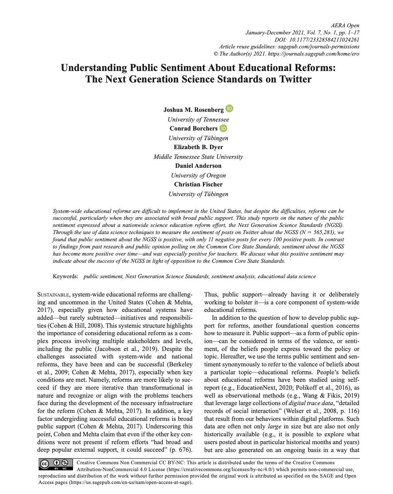
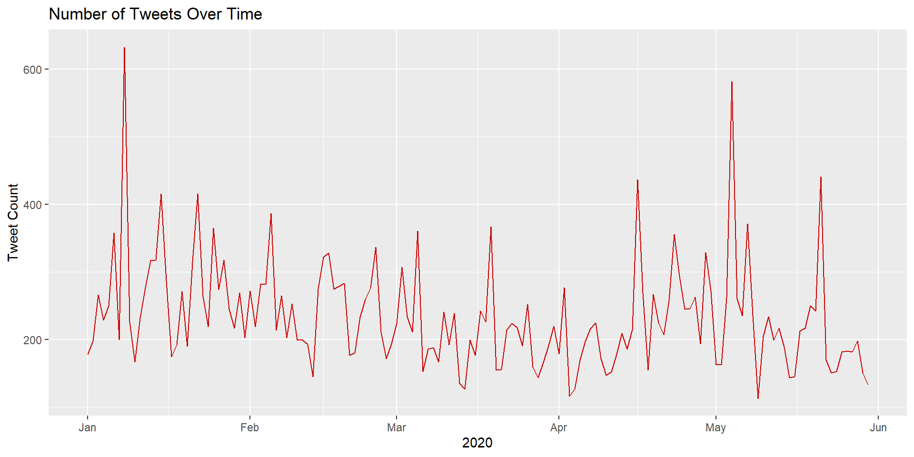
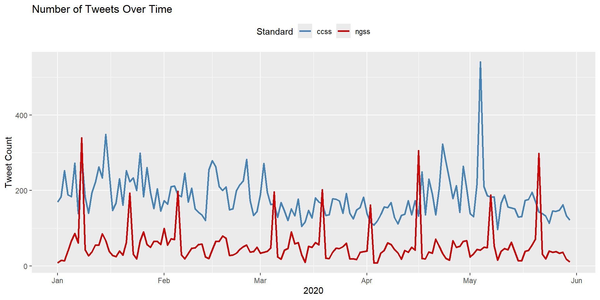
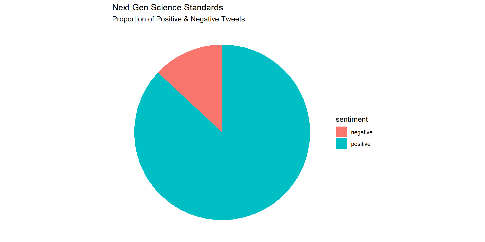
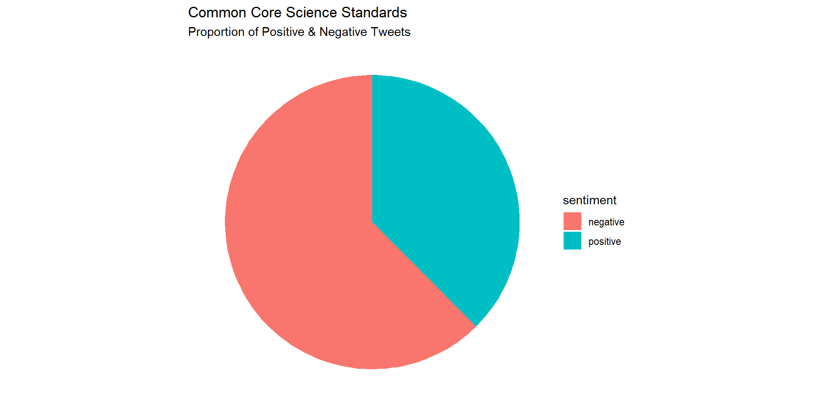

Working with Sentiment Lexicons
Text Mining Module 2: Code Along
Welcome to the Text Mining Code Along for Module 2
The Text Mining course is designed for those seeking an introductory understanding of quantifying the text in documents to better understand their properties
The following Code Along is a companion to the Module 2 Case Study’s Explore stages

Figure 2.2 Steps of Data-Intensive Research Workflow
[@krumm2018]
Module Objectives
By the end of this module, we will:
Visualize the date range of our
ccss-tweetsdatasetSummarize and compare public sentiment using summary statistics
Visualize sentiment through a pie chart
Context of the Problem

Rosenberg, J. M., Borchers, C., Dyer, E. B., Anderson, D., & Fischer, C. (2021). Understanding Public Sentiment About Educational Reforms: The Next Generation Science Standards on Twitter. AERA Open, 7. https://doi.org/10.1177/23328584211024261
Research Questions:
What is the public sentiment expressed toward the NGSS?
How does sentiment for NGSS compare to sentiment for CCSS?
Load Libraries


- Load the
tidyverse,tidytext, andtextdatapackages usinglibrary()
Time Series
Let’s take a very quick look at the number of daily tweets over the first 5 months of 2020:
daily_tweets <- ss_tweets |>
mutate(tweet_date = as.Date(created_at)) |>
group_by(tweet_date) |>
summarise(count = n())
# Plot a line chart of the number of tweets over time
ggplot(daily_tweets, aes(x = tweet_date, y = count)) +
geom_line(color = "#CC0000") +
labs(
title = "Number of Tweets Over Time",
x = "2020",
y = "Tweet Count")
Now recycle and modify the previous code to plot each standard separately so we can compare the number of tweets over time by Next Generation Science and Common Core Standard:
daily_tweets <- ss_tweets |>
mutate(tweet_date = as.Date(created_at)) |>
group_by(standards, tweet_date) |>
summarise(count = n()) |>
ungroup()
ggplot(daily_tweets, aes(x = tweet_date, y = count, color = standards, group = standards)) +
geom_line(size = 1) +
# Manually define colors for each standard
scale_color_manual(values = c("steelblue", "#CC0000")) +
labs(
title = "Number of Tweets Over Time",
x = "2020",
y = "Tweet Count",
color = "Standard"
) +
theme(legend.position = "top")
Sentiment Summaries
Since our primary goals is to compare public sentiment around the NGSS and CCSS state standards, in this section we put together some basic numerical summaries using our different lexicons to see whether tweets are generally more positive or negative for each standard as well as differences between the two. To do this, we revisit the following dplyr functions:
count()lets you quickly count the unique values of one or more variablesgroup_by()takes a data frame and one or more variables to group bysummarise()creates a numerical summary of data using arguments likemean()andmedian()mutate()adds new variables and preserves existing ones
And introduce one new function:
pivot_wider()“widens” data, increasing the number of columns and decreasing the number of rows. The inverse transformation ispivot_longer().
Sentiment Counts
Let’s start with bing, our simplest sentiment lexicon, and use the count function to count how many times in our sentiment_bing data frame “positive” and “negative” occur in sentiment column :
Since our main goal is to compare positive and negative sentiment between CCSS and NGSS, let’s use the group_by function again to get sentiment summaries for NGSS and CCSS separately:
Compare Sentiment Counts
First, let’s untidy our data a little by using the pivot_wider function from the tidyr package to transform our sentiment column into separate columns for negative and positive that contains the n counts for each:
# A tibble: 2 × 3
# Groups: standards [2]
standards negative positive
<chr> <int> <int>
1 ccss 18391 10290
2 ngss 1795 5752Finally, we’ll use the mutate function to create two new variables: sentiment and lexicon so we have a single sentiment score and the lexicon from which it was derived:
# A tibble: 2 × 6
# Groups: standards [2]
lexicon standards negative positive sentiment ratio
<chr> <chr> <int> <int> <int> <dbl>
1 bing ccss 18391 10290 -8101 0.560
2 bing ngss 1795 5752 3957 3.20 Compute Sentiment Scores
To calculate a summary score, we will need to first group our data by standards again and then use the summarise function to create a new sentiment variable by adding all the positive and negative scores in the value column. This is for AFINN:
# A tibble: 2 × 3
lexicon standards sentiment
<chr> <chr> <dbl>
1 AFINN ccss -14998
2 AFINN ngss 11709Again, CCSS is overall negative while NGSS is overall positive!
Calculate a single sentiment score for NGSS and CCSS using the NRC lexicon.
# A tibble: 2 × 5
# Groups: standards [2]
standards method negative positive sentiment
<chr> <chr> <int> <int> <dbl>
1 ccss nrc 16715 52867 3.16
2 ngss nrc 2161 13847 6.41Visualizing Sentiment
Let’s create a simple pie chart that we can use to visually communicate the proportion of positive and negative tweets:

Replicate this process to create a similar pie chart for the CCSS tweets.
afinn_counts <- afinn_sentiment |>
group_by(standards) |>
count(sentiment) |>
filter(standards == "ccss")
afinn_counts |>
ggplot(aes(x="", y=n, fill=sentiment)) +
geom_bar(width = .6, stat = "identity") +
labs(title = "Common Core Science Standards",
subtitle = "Proportion of Positive & Negative Tweets") +
coord_polar(theta = "y") +
theme_void()
What’s Next?
- Complete the Explore part of the case study
- Complete the Sentiment Analysis badge
- Do essential readings for the next module